금속재료기사 (2011-06-12 기출문제)
1과목: 금속조직학
1. 편정반응(Motnotecticreaction)을 옳게 표기한 것은?
- β(고용체) ⇔ 액상(E)+α(고용체)
- L(액상) ⇔ G(고상)+H(액상)
- E(액상)+Q(고상) ⇔ R(고상)
- α(고용체)+E(융체) ⇔ G(고상)
(정답률: 78%)

2. 냉간가공된 순수한 구리를 상온에서 고온으로 서서히 연속적으로 가열할때 가장 많은 에너지를 방출하는 과정은?
- 회복
- 잠복기
- 재결정
- 결정립 성장
(정답률: 80%)
3. 열간 인발한 알루미늄의 횡단면 조직을 관찰한 결과 중심부에는 매우 미세한 결정립으로 구성되어 있으나 가장자리는 현저한 조대입자의 생성이 관찰되었다. 이에 대한 원인과 방지대책으로 적합한 것은?
- 원인 : 편석
대책 : 재어닐링을 실시한다. - 원인 : 불균일한 변형도
대책 : 인발도를 증가시킨다. - 원인 : 불순물 원소의 확산
대책 : 재어닐링을 실시한다. - 원인 : 공정온도의 불균일
대책 : 공정온도를 상향 조정한다.
(정답률: 87%)
4. 금속의 응고시 핵생성 속도를 N, 결정 성장속도를 G로 표시할 때 다음 설명 중 틀린 것은?
- G가 N보다 빨리 증가할 때는 결정립이 조대화된다.
- G와 N이 교차하는 경우 중간크기의 결정립을 얻을 수 있다.
- N이 0(zero)에 접근하고, G가 증가되면 비정질을 얻을 수 있다.
- N이 G에 비해 현저하게 증가할 때 결정립이 미세화 된다.
(정답률: 62%)
5. 체심입방정(BCC), 면심입방정(FCC), 조밀육방정(HCP) 결정구조의 원자 충전율과 배위수로 옳은 것은? (단, 조밀육방정의 축 비(c/a)는 1.633이다.)
- 충전율은 BCC:74%, FCC:68%, HCP:68% 배위수는 BCC:12, FCC:8, HCP:8
- 충전율은 BCC:74%, FCC:68%, HCP:74% 배위수는 BCC:12, FCC:8, HCP:12
- 충전율은 BCC:68%, FCC:74%, HCP:74% 배위수는 BCC:8, FCC:12, HCP:12
- 충전율은 BCC:68%, FCC:74%, HCP:68% 배위수는 BCC:12, FCC:12, HCP:8
(정답률: 90%)
6. 인장시편의 초기 단면적이 78mm2이다. engineering strain 이 0.3일 때의 단면적은 몇 mm2인가?
- 55
- 60
- 70
- 80
(정답률: 62%)
7. 이온결합 고체내에서 발생하는 쇼트키(schottky) 결함은 다음 중 어느 결함에 속하는가?
- 점결함
- 선결함
- 면간결함
- 체적결함
(정답률: 83%)
8. 깁스의 상율에서 순수한 물이 불변점(invariant point)에서 갖는 자유도는?
- 0
- 1
- 2
- 3
(정답률: 81%)
9. 소성변형 후 풀림처리 하였을 때 쌍정이 나타나지 않는 것은?
- Cu
- Ag
- Al
- Au
(정답률: 59%)
10. FCC 결정구조에서 가장 큰 원자 밀도를 가진 면은?
- (110)
- (111)
- (100)
- (112)
(정답률: 75%)
11. 순금속과 달리 합금의 응고 조직성장에서 만나타나는 현상은?
- 세포형 성장
- 평탄면 성장
- 주상정 성장
- 수지상정 성장
(정답률: 64%)
12. 재결정 과정중에 일어나는 현상을 설명한 것으로 옳은 것은?
- 전위가 감소되어 경도는 저하 하나 연신율은 증가한다.
- 재결정이 진행할수록 내부축적 에너지가 점차 증가한다.
- 핵생성 과핵성장에 의해 변형된 새로운 입자들이 생성, 성장한다.
- 재결정 온도이상으로 가열하면 결정입계 면적의 증가로 인해 결정입계 에너지가 감소한다.
(정답률: 65%)
13. 금속이 합금이 되었을때 일반적으로 강화되는 것은 무엇때문인가?
- 공격자점이 적어지기 때문이다.
- 전위가 생기기 쉽기 때문이다.
- 응력이 생기기 때문이다.
- 원자수가 많아지기 때문이다.
(정답률: 59%)
14. 다음 그림에서 빗금친 abc 면의 밀러 지수로 옳은 것은?
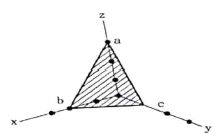
- (263)
- (236)
- (312)
- (362)
(정답률: 81%)
15. 치환형 고용체의 경우 용질원자와 용매원자의 치환이 난잡하게 일어난다고 하면 고용체 격자정수의 값은 용질원자의 농도에 비례하게 된다. 이 관계의 법칙을 무엇이라 하는가?
- 라울의 법칙
- 버거스의 법칙
- 레이티의 법칙
- 베가드의 법칙
(정답률: 83%)
16. 다음 중 철의 상과 조직에 대한 설명으로 옳은 것은?
- 원자 충전율은 오스테나이트보다 페라이트가 더 크다.
- 펄라이트는 페라이트와 레데뷰라이트가 층상 형태로 구성하고 있다.
- 페라이트는 탄소를 약 0.85% 함유하며, 강도가 좋고, 마모에 강하다.
- 오스테나이트는 강자성의 성질을 갖지 않는다.
(정답률: 80%)
17. 다음 중 확 산속도의 대소관계를 옳게 나열한 것은? (단, 빠른 것부터 느린 순서이다.)
- 표면확산 > 입계확산 > 격자확산
- 표면확산 > 격자확산 > 입계확산
- 격자확산 > 입계확산 > 표면확산
- 입계확산 > 격자확산 > 표면확산
(정답률: 89%)
18. 축 길이가 a = b ≠ c 이고, 축각이 α = γ = 90°, β = 120°인 결정계는?
- 육방정계(hexagonalsystem)
- 정방정계(tetragonalsystem)
- 입방정계(cubicsystem)
- 사방정계(orthorhombicsystem)
(정답률: 84%)
19. 합금이 규칙격자를 형성하였을 때 나타나는 성질로 틀린 것은?
- 전기전도도가 감소한다.
- 경도가 증가한다.
- 연성이 감소한다.
- 강도가 증가한다.
(정답률: 77%)
20. 다음 중 입방정의 면지수와 방향지수가 서로 직교 하는 것은?
- (100) 과 [100]
- (001) 과 [010]
- (001) 과 [110]
- (001) 과 [100]
(정답률: 82%)
2과목: 금속재료학
21. 오스테나이트계 스테인리스강의 입계부식을 방지하는 대책으로 적합하지 않은 것은?
- 고온으로 부터 급냉하고 400~800°C에서 장시간 유지한다.
- 크롬탄화물이 석출 하지 않도록 탄소량을 0.03% 이하로 아주 낮게 유지한다.
- 1000~1150°C로 가열하여 크롬탄화물을 고용시킨 다음 급냉한다.
- C 와 친화력이 Cr 보다 큰 Ti, Nb, Ta 등의 안정화 원소를 첨가한다.
(정답률: 74%)
22. 주철(Cast Iron)의 파면에 따른 분류로 옳은 것은?
- 회주철, 백주철, 구상흑연주철
- 회주철, 백주철, 가단주철
- 회주철, 백주철, 냉경주철
- 회주철, 백주철, 반주철
(정답률: 69%)
23. 알루미늄합금에서 가공재는 냉간가공과 열처리에 의하여 기계적 성질이 달라지므로 질별(質別)기호를 붙여 사용한다. “W”의 기호가 의미하는 것은?
- 어닐링한 것
- 가공 경화한 것
- 용체화처리한 것
- 제조한 그대로의 것
(정답률: 84%)
24. 금속초미립자의 특성을 설명한 것 중 옳은 것은?
- 융점이 금속덩어리 보다 높다.
- 활성이 약하여 화학 반응을 일으키지 않는다.
- 저온에서 열 저항이 매우 작아 열 의양도체이다.
- Fe계 합금 초미립자의 금속 덩어리보다 자성이 약하다.
(정답률: 76%)
25. ASTM 결정립도 번호 n, 100배 배율의 1in2에 존재하는 결정립수를 N 이라고 하면 N = n-1로 주어진다. 만약에 어떠한 재료가 200배 미세조직 사진에서 1in2에 64개의 결정립이 관찰된다면 ASTM 결정립도 번호는?
- 6
- 7
- 8
- 9
(정답률: 60%)
26. 순철의 Ac3변태에 관한 설명으로 틀린 것은?
- 격자상수가 감소한다.
- 비체적이 작기 때문에 수축한다.
- 자기강도가 Ac3점에서 급격히 감소한다.
- BCC인 α-Fe이 FCC인 γ-Fe로 변태한다.
(정답률: 62%)
27. 내열성 주물로서 공냉 실린더, 피스톤등에 사용되는 합금으로 조성 Al-Cu-Ni-Mg인 합금은?
- Silumin
- Lautal
- Y합금
- Hydronalium
(정답률: 70%)
28. 스털링 실버(sterling silver)는 어떠한 합금인가?
- Ag-Sn합금
- Ag-Pt합금
- Ag-Cu합금
- Al-Si합금
(정답률: 79%)
29. 해드필드(hadfield)강에 대한 설명으로 틀린 것은?
- 베이나이트 조직을 가진 강이다.
- 고온에서 서냉하면 결정립계에 M3C가 석출한다.
- 고온에서 서냉하면 오스테나이트가 마텐자이트로 변태한다.
- 열전도성이 나쁘고, 팽창계수도 커서 열변형을 일으킨다.
(정답률: 77%)
30. 다음 중 쌍정(twin)에 대한 설명 중 옳지 않은 것은?
- 쌍정변형은 원자의 전단적인 이동에 의해 형성되는 응력완화 현상이다.
- 쌍정은 기계적 가공시 발생하는 현상이므로 열처리시는 발생하지 않는다.
- 쌍정 형성 시 결정의 방위가 변화하게 되므로 이후 새로운 슬립계가 작용할 수 있게 된다.
- 쌍정은 특정의 평면을 경계로 하여 처음의 결정과 경면적 대칭의 관계에 있는 원자배열을 갖는 결정이다.
(정답률: 75%)
31. 그래프는 Al-Cu계 합금에서 각종 상들의 용해도 곡선을 나타내고 있는 것이다. Xm조성을 갖는 합금의 경우 시효온도에 따른 석출상의 종류가가장 많은 시효온도 범위는 무엇인가?
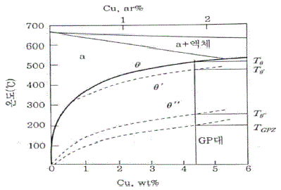
- TGPZ아래
- Tθ-GPZ
- Tθ-Tθ′
- Tθ-Tθ
(정답률: 64%)
32. 수소저장합금 재료가 갖추어야 할 구비 조건이 아닌 것은?
- 활성화가 용이 할것
- 수소의 흡수 및 방출속도가 작을 것
- 상온부근에서 수 기압의 수소해리 평형압을 가질 것
- 단위중량 및 단위체적당의 수소흡수 및 방출량이 많을 것
(정답률: 78%)
33. 마그네슘의 특징을 설명한 것 중 틀린 것은?
- 기계가공이 용이하다.
- 비중이 약 1.74인 가벼운 금속이다.
- 용융점은 약 650°C로 저용융점 금속이다.
- 금속 정련시 탈황, 탈산 등의 용도로 쓰인다
(정답률: 63%)
34. 다결정체인 탄소강 중에 함유된 P(인)의 영향으로 틀린 것은?
- 고온취성의 원인이 된다.
- Fe3P로 입계에 편석하며, 입자의 조대화를 촉진한다.
- Fe3P는 MnS 또는 MnO와 같이 집합하여 고스트라인을 형성하고 강의 파괴 원인이 된다.
- P의 함유량은 공구강에서 0.025% 이하, 주강에서는 0.03% 이하가 좋다.
(정답률: 82%)
35. 강에서 내식성을 가장 많이 향상시키는 원소는?
- Co, V
- Nb, Cu
- S, Mn
- Cr, Ni
(정답률: 84%)
36. 고속도공구강(SKH51)의 주요 합금 첨가원소로 옳은 것은?
- Co-Be-W-Cr
- N-Cr-Ni-Co
- W-Cr-Mo-V
- Co-Ni-W-Sn
(정답률: 84%)
37. Fe-C 상태도에 나타나지 않는 불변반응은?
- 공정반응
- 포정반응
- 공석반응
- 포석반응
(정답률: 89%)
38. 강에 쾌삭성을 향상시키기 위하여 첨가하는 원소가 아닌 것은?
- S
- Ca
- Cu
- Pb
(정답률: 64%)
39. 알루미늄 합금의 인성을 향상시키기 위한 방법으로 틀린 것은?
- 기지금속의 순도를 높이고 Fe, Si 등 불순물을 제한한다.
- 용탕처리를 하여 비금속개재물과 가스 성분을 제거한다.
- 가공열처리에 의해 조직을 침상화한다.
- 조대석출물의생성을억제한다.
(정답률: 59%)
40. 구상흑연주철에서 스테다이트(steadite)의 다른 명칭은?
- 탄화철
- 유화철
- 질화철
- 인화철
(정답률: 69%)
3과목: 야금공학
41. 탈산제의 구비조건에 대한 설명으로 틀린 것은?
- 산소와의 친화력이 Fe보다 낮아야 한다.
- 탈산제가 용강 중에 급속히 용해되어야 한다.
- 탈산생성물의 부상속도가 커야한다.
- 탈산생성물이 강중에 남지 않게 하여야 한다.
(정답률: 70%)
42. 다음 내화물 중 Al2O3의 성분을 포함하고있지 않는 것은?
- 납석 벽돌
- 샤모트 벽돌
- 폴스테라이트 벽돌
- 코르하르트 벽돌
(정답률: 68%)
43. 부두아(boudouard) 곡선에서 Carbon Solution 반응을 설명한 것으로 틀린 것은?
- CO2 + C → 2CO의반응이다.
- 고온부에서 반응속도가 빠르다.
- 압력이 낮아지면 반응속도가 느려진다.
- Carbon Loss 반응이라고도 한다.
(정답률: 80%)
44. 기체 운동론에 의하여 단원자 분자 이상기체 1몰의 평균 운동에너지 Ek와 PV적(積)사이에 PV=(2/3) Ek의 관계가 성립된다. 임의의 온도 T(K)에서 이상기체 1몰이 갖는 한 방향당 운동에너지는 에너지 등분칙에 의하여 어떠한 값이 되는가?
- (3/2)KT
- (1/2)KT
- (2/3)KT
- (1/3)KT
(정답률: 56%)
45. Pb의 융점은 1기압에서 325°C이다. 10기압에서의 융점(°C)은 얼마인가? (단, 융점에서의 밀도는 pPb(s)=11.01(g/cm3) pPb(l) = 10.65(g/cm3)이며, 융해 잠열은 5.35cal/g이다.)
- 325.1
- 315.1
- 335.1
- 3⑤.1
(정답률: 50%)
46. 순수한 물질의 여러 상(고체, 액체, 기체) 사이에 평형이 이루어질 열역학적 조건으로 틀린 것은?
- 각 상에서의 속도(V)가 모두 같아야 한다.
- 각 상에서의 압력(P)이 모두 같아야 한다.
- 각 상에서의 온도(T)가 모두 같아야 한다.
- 각 상에서의 물 자유에너지(
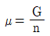
)가 같아야 한다.
(정답률: 84%)
47. 라울(Raoult)의 법칙에 따르는 이상용액에서 용질물질 B의 활동도 계수 γB는?
- γB > 1
- γB < 1
- γB = 0
- γB = 1
(정답률: 78%)
48. 평형상수(Kp)를 사용하여 알아낼 수 있는 열역학적양 중-RTlnKp와 동일한 것은?
- △G0
- △H0
- △S0
- △A0
(정답률: 70%)
49. 이상기체(Cp=2.5R) 1몰이 상태 1(1기압, 298K)에서 상태2(5기압, 400K)로 변할때, 엔트로피 변화(△S)에 관한 설명 중 옳은 것은?
- 계의 △S 값은 상태 1에서 상태 2로 변화하는 과정이 가역이든 비가역이든 동일한 값을 가진다.
- 계의 △S 값은 상태1 에서 상태 2로 변화하는 과정이 가역일 때가 비가역일 때 보다 더 크다.
- 주어진 조건으로 △S 값을 계산할 수 없다.
- 계의 △S 값은(+) 값을 가진다.
(정답률: 58%)
50. Gibbs free energy △G의 물리적 의미를 설명하는 표현 중 틀린 것은?
- 자연변화의 방향, 즉 불가역의 정도를 나타내는 척도이다.
- 등온, 등압변화에 있어서 이용 가능한 최대의 일이다.
- 화학반응에서 친화력의 척도가 된다.
- 변화의 과정이나 속도를 나타내는 척도이다.
(정답률: 56%)
51. 황화광을 제련하는 경우에 이용되는 방법으로 동광의 자융제련(flash smelting)에 사용하는 건식제 련법은?
- 산화제련
- 휘발제련
- 염화제련
- 황산화제련
(정답률: 56%)
52. 라울형 이상용액의 혼합생성열(△HM,id)값으로 옳은 것은?
- △HM,id=0
- △HM,id=1
- △HM,id < 0
- △HM,id > 0
(정답률: 66%)
53. 25°C에서 3mole의 H2(g)와 1mole의 N2(g)를 섞어서 이상기체 혼합물을 생성할 때 △SM(Entropy of mixing)는 약 몇 cal/K인가??
- 4.5cal/K
- 5.5cal/K
- 6.5cal/K
- 7.5cal/K
(정답률: 54%)
54. aA + bB ⇄ cC + dD 인 가역반응에서 생성 물 과반응물의 mole수가 같다면 압력평형상수(Kp)와 농도 평형상수(Kc)와의 관계는? (단, A ,B, C, D는 이상기체로 가정한다.)
- Kp ≠ Kc
- Kp ≥ Kc
- kp = Kc
- Kp ≤ Kc
(정답률: 78%)
55. 고로의 내화재 품질 요구 조건으로 틀린 것은?
- 고온에서 용융 및 휘발하지 않아야 한다.
- 열전도도 및 냉각효과는 없어야 한다,
- 고온, 고압하에서 상당한 강도를 가져야 한다.
- 용선, 용제 및 가스에 대하여 화학적으로 안정해야 한다.
(정답률: 81%)
56. 다음 연소 반응식 중 틀린 것은?
- H2+1/2O2→H2O
- CH4+2O2→CO2+2H2O
- C+O2→CO2
- S+O2→SO4
(정답률: 81%)
57. Maxwell 관계식 중 틀린 것은?
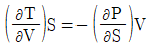
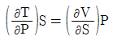
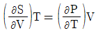
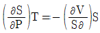
(정답률: 63%)
58. 16.18%(0.1486 몰분율)Zn의 α황동에서 700°C일 때 Zn의 활동도 계수는? (단, 700°C에서 황동내의 Zn 증기압은 1.17mmHg, 순 Zn의 증기압은 60.5mmHg이다.)
- 0.0193
- 0.130
- 0.210
- 0.340
(정답률: 52%)
59. 1몰의 이상기체가 일정 온도 300K에서 팽창을 할 때 엔탈피 변화(ΔH)값과 내부 에너지변화 (ΔU) 값의 차이인 ΔH-ΔU는?
- (+) 값을 갖는다.
- (-) 값을 갖는다.
- 0 의값을 갖는다.
- 구할 수 없다.
(정답률: 54%)
60. 다음 중열 전도율의 단위로 옳은 것은?
- kcal/m·h·°C
- kcal/h·°C
- Kcal/m3·h·°C
- kcal/h
(정답률: 83%)
4과목: 금속가공학
61. 인장축이 슬립면과 수직하거나 슬립면에 평행 할 때 이슬립계에 분해되는 분해전단 응력은?
- 0
- 30
- 45
- 60
(정답률: 47%)
62. 냉간 가공된 금속재료를 재가열 시 일어나는 Polygoni zation은 어느 단계에서 일어나는가?
- 과열(over heating)
- 결정성장(graingrowth)
- 재결정(recrystallization)
- 회복(recovery)
(정답률: 59%)
63. 판재(sheet)의 프레스성형에서 나타나는 결함 중의 하나인 오렌지필(orangepeel)의 원인이 아닌 것은?
- 표면의 결정립이 조대할 때
- 표면의 결정립 수가 적을때
- 인접결정 간의 큰 방위차 때문에
- 루더스대(Ludersband)의 형성 때문에
(정답률: 74%)
64. 다음 중 전탄성계수 G의 관계식으로 옳은 것은? (단, E 는 탄성계수, v는 포아송비이다.)
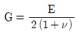
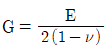
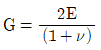
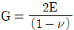
(정답률: 82%)
65. 알루미늄과 같이 적층 결함에너지가 클수록 나타나는 현상으로 옳은 것은?
- 부분 전위간 거리가 길어지고, 적층결함 폭이 넓어진다.
- 부분 전위간 거리가 길어지고, 적층결함 폭이 좁아진다.
- 부분 전위간 거리가 짧아지고, 적층결함 폭이 좁아진다.
- 부분 전위간 거리가 짧아지고, 적층결함 폭이 넓어진다.
(정답률: 55%)
66. 강의 연성-취성 천이온도를 측정하기 위하여 가장 널리 사용되는 시험법은?
- 인장시험
- 샤르피 충격시험
- 비틀림시험
- 굽힘시험
(정답률: 73%)
67. 다음 중 나사나 기어등을 만들 때의 가공법으로 옳은 것은?
- 단조
- 전조
- 압출
- 인발
(정답률: 80%)
68. 면심입방격자(FCC)의 슬립면과 슬립방향을 바르게 나타낸 것은?
- (110)[111]
- (111)[110]
- (001)[110]
- (110)[101]
(정답률: 69%)
69. 다음 중 압하율을 크게 하는 조건으로 틀린 것은?
- 지름이 큰 롤을 사용한다.
- 압연 온도를 높여준다.
- 롤 회전속도를 빠르게 한다
- 압연재를 뒤에서 밀어준다.
(정답률: 81%)
70. 금속결정 내에 전위밀도가 1011cm/cm3인경우이금속을 10-3/초의 전단 변형 속도로써 변형을 가했을 때 평균 전위 속도는 얼마인가? (단, 이때 Burgersvector는 10-8cm이다.)
- 10-3cm/sec
- 10-6cm/sec
- 103cm/sec
- 106cm/sec
(정답률: 67%)
71. Griffith가 제안한 파괴 원리는 어떠한 재료에 적용 되는가?
- 완전 탄성체
- 완전 소성체
- 점성을 갖는고체
- 탄성과 소성을 공유하는 고체
(정답률: 64%)
72. 다음 중 부품 등에 상호작용을 하여 파괴조건을 제어하는 인자가 아닌 것은?
- 파괴인성
- 설계응력
- 탄성계수
- 균열크기
(정답률: 64%)
73. 크리프 강도가 높은 재료가 갖추어야 할 재료 물성 또는 미세조직적 요건 중 틀린 것은?
- 조대한 결정립
- 높은 융점
- 높은 격자저항
- 빠른 확산 속도
(정답률: 59%)
74. σ11=450MPa, σ22=450MPa, σ33=0, σ12=150MPa 이용하여 구한 최대 전단응력의 일 때, Mohr 원을값은 몇 MPa인가?
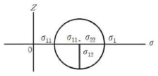
- 50
- 150
- 200
- 450
(정답률: 73%)
75. 구리와 알루미늄을 인장하였을 때 구리의 가공경화 정도가 알루미늄의 가공경화 정도보다 더 큰 이유를 설명한 것 중 가장 적절 한것은?
- 구리는 BCC이고, 알루미늄은 FCC 이기 때문이다.
- 구리의 적층결함에너지는 알루미늄의 경우에 비하여 더 적기 때문이다.
- 구리의 경우가 알루미늄의 경우에 비하여 융점이 낮기 때문이다.
- 구리의 경우가 알루미늄의 경우에 비해 도전율이 낮기 때문이다.
(정답률: 73%)
76. 균질변형에서 경계마찰계수(m)에 대한 설명으로 틀린 것은?
- 완전 미끄러짐은 0(Zero)이다.
- 부착인 경우는1이다.
- m은 전단항복응력계/면전단강도 으로 표현된다.
- m은 계면전단강도/전단항복응력계으로표현된다
(정답률: 70%)
77. 다음 중 피로에 대한 설명으로 틀린 것은?
- 허용응력 이하의 응력을 반복적으로 받을 때 재료가 파괴되는 현상을 말한다.
- 반복응력이 작용하여도 재료가 피로 파단되지 않을때의 응력 중 최대값을 피로한도 라고한다.
- 피로한도는 냉간가공, 쇼트피이닝 등으로 증가시킬 수 있다.
- S-N 곡선은 충격과 피로 사이클 관계를 나타낸다.
(정답률: 64%)
78. 풀림한 저탄소강의 소성거동은 σ=650ε0.2MPa로 나타났다면 만일 이금속을 처음 단면수축율 20%, 냉간가공 후 다시 30% 냉간가공 하였다면 이러한 가공을 받는 금속의 항복강도는 약 얼마인가? (단,
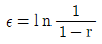
으로 계산한다.)- 383MPa
- 483MPa
- 583MPa
- 683MPa
(정답률: 41%)
79. 전위(dislocation)들의 모양을 직접 관찰할 수 있는 분석장비는?
- 광학현미경
- 투과전자현미경
- 초음파 탐상기
- 전기 저항 측정장치
(정답률: 83%)
80. 다음 중 Tresca 항복조건을 옳게 나타낸 것은? (단, σ1=최대 주응력, σ3=최소 주응력, σ0=1측 인장 항복응력, k =전단항복응력)
- σ1-σ3=σ0
- σ3-σ1=σ0
- σ1-σ3=3k
- σ3-σ1=5k
(정답률: 79%)
5과목: 표면공학
81. Al을 아노다이징 한 후의 착색처리 방법 중 일광에 퇴색하지 않고 견고하여 건축자재 등에 많이 사용되는 방법은?
- 무기염료 착색법
- 유기염료 착색법
- 자연 발색법
- 유성염료 착색법
(정답률: 68%)
82. 파커라이징에 대한 설명 중 틀린 것은?
- 내식성을 지니는 피막을 형성하는 기술이다.
- 촉매의 무전해 도금이다.
- 화성처리에 속한다.
- 인산염 피막처리이다.
(정답률: 59%)
83. 글로우방전(glow discharging)을 이용하여 강중에 질소를 침입, 확산시키는 표면경화법은?
- 터프라이드법
- 산질화법
- 고주파열처리법
- 이온질화법
(정답률: 68%)
84. 황동합금의 도금에서 금속 석출에 의한 도금방법의 설명으로 틀린 것은?
- 유리 NaCN을 증가시키면 석출 중의 구리분이 많아 진다.
- 도금액 중에 NaOH를 가하면 석출 중의 구리는 감소한다.
- 도금액을 교반하는 정도가 클수록 구리 금속 성분함량이 많은 합금이 도금이 된다.
- 음극의 전류밀도를 증가시킬수록 아연 금속 성분함량이 많은 합금의 도금이 된다.
(정답률: 50%)
85. 구조용 합금강, 고망간강 ,고니켈강 등에서 융강 중의 수소 가스로 인하여 강의 파단면에 원형 또는 타원형으로 생기는 것으로 열처리 후 균열의 원인이 되는 것은?
- 편석
- 수축공
- 백점
- 비금속개재물
(정답률: 74%)
86. 알루미늄을 양극으로 하여 일정한 전해액에서 적정 조건으로 분극시킬 경우 양극산화 피막이 생성된다. 공업적으로 쓰이고 있는 양극산화 피막의 전해질로 적당하지 않은 것은?
- 황산(H2SO4)
- 수산(C2H2O4)
- 크롬산(CrO3)
- 염화칼륨(KCl)
(정답률: 73%)
87. 다음 중 용체화처리에 대한 설명으로 틀린 것은?
- 초합금강에서는 내열성을 개량하는데 목적이 있다.
- 불수강에서는 내식성을 향상시키는 목적이 있다.
- 탄화물 및 기타의 화합물을 페라이트중에 고용시킨 후 공기중에서 냉시킨다.
- 해드필드강(hadfield)에서는 강의 인성 및 내마모성을 유지하기 위해 사용한다.
(정답률: 66%)
88. 다음 중 화학적 기상도금(CVD)법으로 제조하는 박막으로 볼 수 없는 것은?
- Si3N4
- SiO2
- MoSi2
- FeO2
(정답률: 65%)
89. PVD에서 진공 증착층 미세구조의 변수가 아닌 것은?
- 핵생성률과 성장률
- 기판의 성질
- 기체흐름의 입사각
- 분위기 가스의 압력과 특성
(정답률: 61%)
90. 다음 중 탈탄에 관한 설명으로 틀린 것은?
- 탈탄은 산화성 분위기나 용융염 중의 슬래그 등에 의해서 발생된다.
- 염욕처리시 탈탄을 방지하려면 수분이 함유되지 않도록 한다.
- 중성분 위기에서 염욕열처리를 하면 탈탄을 방지할 수 있다.
- 탈탄된 강재를 급냉 경화하면 담금질 경도가 증가한다.
(정답률: 45%)
91. 양극산화(Anodizing)법으로 생성된 알루미늄 산화 피막의 특성 중 틀린 것은?
- 피막은 다공질이다.
- 보호성이 산화피막을 형성한다.
- 산화알루미늄은 도체이다.
- 부동태 피막을 얻을 수 있다.
(정답률: 58%)
92. 주사전자현미경에 의한 시료 관찰시 표면이 대전되면 주사전자선이 불균일하게 편향되므로 이상 콘트라스트를 발생시킨다. 이것을 방지하기 위하여 시료표면에 금속을 피복하여 관찰하는데 피복용 물질로 적합하지 않은 것은?
- Pt
- Au
- Li
- Cr
(정답률: 80%)
93. 용융아연도금에 대한 설명으로 틀린 것은?
- 철은 아연보다 이온화 경향이 크기 때문에 아연이 먼저 소모되는 동안 철이 보호를 받는다.
- 아연은 공기중에서 부식 속도가 매우 느리다.
- 수용액 중에 염화물이 있으면 보호피막이 형성되지 않는다.
- 산성이나 알칼리수 용액에서 부식된다.
(정답률: 74%)
94. 담금질 작업시 임계 구역과 위험 구역에서의 냉각방법은?
- 임계구역에서는 천천히 냉각하고, 위험구역에서는 빨리 냉각한다.
- 임계구역에서는 빨리 냉각하고, 위험구역에서는 천천히 냉각한다.
- 임계구역과 위험구역에서 모두 빨리 냉각한다.
- 임계구역과 위험구역에서 모두 천천히 냉각한다.
(정답률: 66%)
95. 전자현미경의 분해능은 프로브의 크기에 의하여 영향을 받는다. 프로브의 크기는 전자선의 회절효과와 렌즈의 수차에 따라서 결정되는데, 전자광학계의 결함에 의해서 발생되는 렌즈수차가 아닌 것은?
- 초점수차(focusaberration)
- 구면수차(sphericalaberration)
- 색수차(chromaticaberration)
- 비점수차(astigmatism)
(정답률: 57%)
96. 다음 중 화학적 기상도금(CVD)의 반응형식에 속하지 않는 것은?
- 열분해
- 이온도금
- 수소환원
- 반응증착
(정답률: 49%)
97. 화학적 기상도금(CVD)법의 특징으로 틀린 것은?
- 처리 온도가 1000°C 정도로 높다.
- 파이프의 내면 미립자에는 피복이 불가능하다.
- 두꺼운 피복도 가능하며, 여러 성분의 피복도 가능하다.
- 형성된 피막의 모재와 확산 또는 반응을 일으켜 밀착성이 매우 좋다.
(정답률: 80%)
98. 강재의 진공열처리는 보통 중진공 정도에서 실시 한다. 이에 해당되는 10-3torr를 SI 단위 인파스칼(Pa)로 환산하면 얼마 정도인가? (단, 1기압은 1.01x105Pa이다.)
- 0.0101
- 0.1330
- 1.010
- 1.330
(정답률: 59%)
99. 착염욕에 대한 특징을 설명한 것 중 틀린 것은?
- 단순염욕에 비하여 균일 전착성이 우수하다.
- 착염욕은 레벨링이 좋은 전착물을 얻기는 힘들다
- 단순염욕보다 높은 과전압 하에서 이루어지기 때문에 석출물이 미립자이며, 밀도가 높다.
- 단순염욕에서 가능했던 합금도 금이 착염욕에서는 불가능하다.
(정답률: 71%)
100. 건식도금에서 사용하는 증발원에 대한 설명으로 틀린 것은?
- 고체증발원은 가열에 의해 기화시켜 사용한다.
- 액상의 증발원은 물을 많이 이용하며 수증기 상태로 만들어 사용한다.
- 기체 증발원은 봄베를 통해 직접 연결하여 사용하기도 한다.
- 증발원은 고상, 액상, 기상의 3가지가 있다.
(정답률: 73%)
편정반응은 물질의 상태 변화에 따른 반응을 의미합니다. 이 중에서도 액상과 고상 간의 상태 변화를 나타내는 것이 "L(액상) ⇔ G(고상)+H(액상)" 입니다. 이 반응은 액상에서 고상과 액상으로 분해되거나, 고상과 액상에서 액상으로 합쳐지는 반응을 나타냅니다. 예를 들어, 물이 얼어서 얼음과 물로 분해되는 것이 이에 해당합니다.